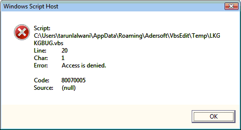

Set FSO = CreateObject("Scripting.FileSystemObject")
Dim fileName
fileName = FSO.GetSpecialFolder(2) & "\IFrameTest.html"
Set oFile = FSO.CreateTextFile(fileName,True)
oFile.Write "<HTML><BODY><IFRAME name=google
src=""http://www.google.co.in""></BODY></HTML>"
oFile.Close
Set oIE = CreateObject("InternetExplorer.Application")
oIE.Navigate2 fileName
oIE.Visible = True
oIE.FullScreen = False
While oIE.Busy
Wend
'Below line would give a Access is Denied error
Set oFrameDoc =
oIE.document.getElementsByTagName("IFRAME").item(0).contentWindow.document

Now we can overcome this access denied error using the EnumIEFramesDocument
'Create the IFRAME test file
Set FSO = CreateObject("Scripting.FileSystemObject")
Dim fileName
fileName = FSO.GetSpecialFolder(2) & "\IFrameTest.html"
Set oFile = FSO.CreateTextFile(fileName,True)
oFile.Write "<HTML><BODY><IFRAME name=google
src=""http://www.google.co.in""></BODY></HTML>"
oFile.Close
'Launch IE
Set oIE = CreateObject("InternetExplorer.Application")
oIE.Navigate2 fileName
oIE.Visible = True
oIE.FullScreen = False
While oIE.Busy
Wend
'Create the screen capture object
Set oScreenCapture = CreateObject("KnowledgeInbox.ScreenCapture")
'Get document object of all frames
Set allFrames = oScreenCapture.EnumIEFramesDocument(oIE.Document)
'Get the google frame
For i = 1 To allFrames.count
If Instr(allFrames(i).Location,"google") Then
Set oGoogle = allFrames.item(i)
Exit For
End If
Next
'Access the IFRAME thorugh the document object
oGoogle.getElementsByName("q").item(0).value = "This is IFRAME Test"
'Destroy objects
Set oScreenCapture = Nothing
Set oIE = Nothing